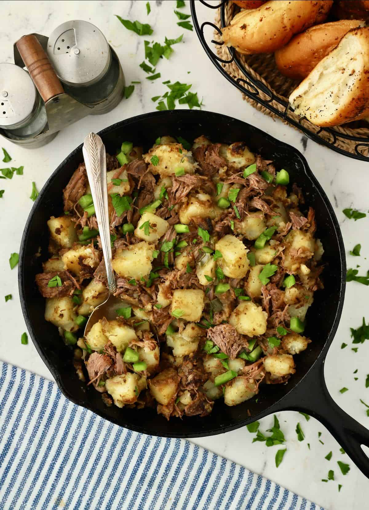

Home

Leftover Roast Beef Hash
How to Make Leftover Roast Beef Hash
Ingredients
- 3 russet potatoes
- 2 cups leftover roast beef, sliced into cubes
- 1 onion, finely chopped
- 1 green bell pepper, thinly sliced
- ½ cup sliced fresh mushrooms
- 1 tablespoon vegetable oil
Directions
step-1
- Place potatoes on a microwave-safe plate and prick skins with a fork. Cook in the microwave until slightly tender, 7 to 8 minutes. Cut into 1-inch cubes.
step-2
- Combine potatoes, roast beef, onion, green bell pepper, and mushrooms in a bowl.
step-3
- Preheat an electric skillet to 350 degrees F (175 degrees C). Coat with oil.
step-4
- Spread potato mixture evenly in the skillet. Let cook, without stirring, until browned, about 5 minutes. Flip and continue cooking until second side is crisp, about 5 minutes more.